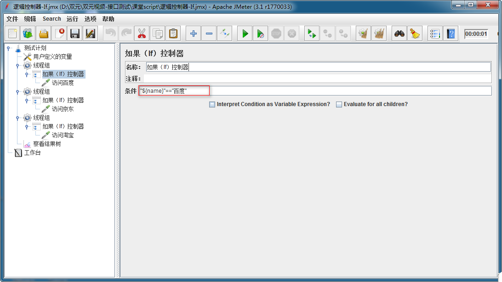
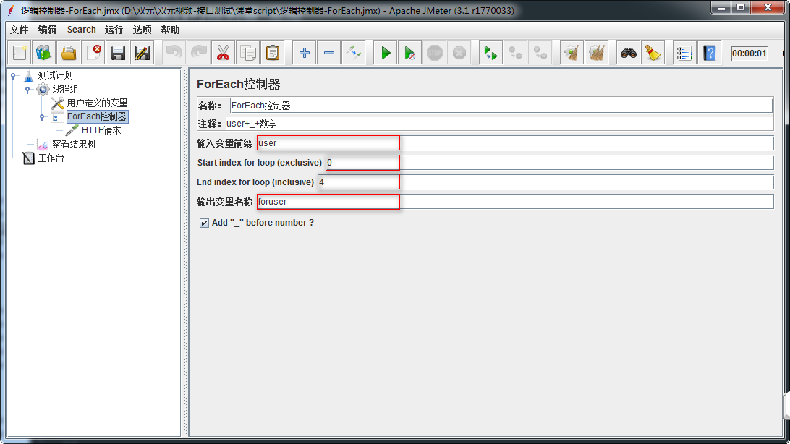
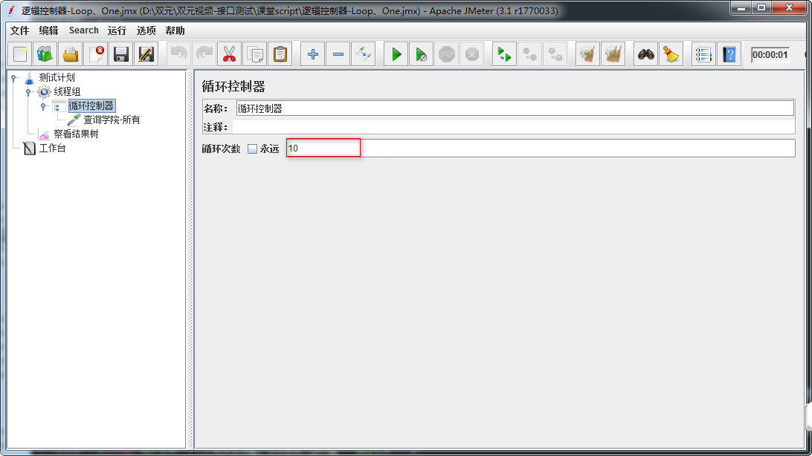

Jmeter 逻辑控制器
目标
- 了解-Jmeter中逻辑控制器
- 掌握-If Controller(IF控制器)使用
- 掌握-ForEach控制器使用
- 掌握-循环控制器
1 为什么要学习逻辑控制器？
1.1 需求
1. name=['百度','京东','淘宝']
2. name=百度,线程组执行请求百度；name=京东,线程组执行请求京东；name=淘宝,线程组执行请求淘宝;
1.2 问题
1. Jmeter目前学习的知识无法使用判断语句去控制HTTP取样器
2. 什么是逻辑控制器？
概念：Jmeter逻辑控制器是可以控制采样器(Sampler)的执行顺序，它由多个逻辑控制语句封装成不同功能的组件组成
2.1 逻辑控制器作用域
作用域：只对其子节点的sampler有效。
3. 常用逻辑控制器
1. 如果（If）控制器
2. ForEach控制器
3. 循环控制器
3.1 如果（If）控制器
作用：条件成真,则执行控制器下所有取样器
解决方案分析
1. 测试计划->线程组
1. 测试计划->用户自定义变量
2. 线程组->如果（If）控制器
3. 如果（If）控制器->HTTP请求
4. 测试计划-察看结果树
技术难点分析
如果（If）控制器 参数设置
如果（If）控制器参数配置图

1. 条件:"${name}"=="百度"
2. 注意：
1) 引用变量格式${name}需要被双引号括起来
2) 两个等号
3) 值需要被双引号括起来
如果(If)控制器-总结
1. 作用
2. 作用域
3. 条件格式
3.2 ForEach控制器
作用：ForEach控制器一般和用户定义的变量一起使用，在用户自定义变量中读取一系列相关的变量。
案例1
使用ForEach组件读取自定义变量,作为请求(查询学院-所有)的user变量值使用
操作分析
1. 测试计划->线程组
2. 线程组->用户定义的变量
3. 线程组->ForEach控制器
4. ForEach控制器->HTTP请求
5. 测试计划->察看结果树
技术难点分析
1. ForEach控制器参数设置
2. 用户定义的变量书写格式(前缀+_+数字)
ForEach控制器参数配置图

1. 输入前缀变量：输入要遍历变量前缀
2. Start index for loop(exclusive):遍历变量开始的索引(从0开始)
3. End index for loop(inclusive):遍历变量结束的索引(不包括结束索引)
4. 输出变量名称:定义要被引用的变量名称
ForEach控制器-总结
1. 作用
2. 使用ForEach读取用户定义的变量时，变量格式
3. ForEach参数设置
3.3 循环控制器
作用：指定循环控制器内取样器的执行次数
案例3
使用循环控制器执行(查询学院-所有)接口10次
操作步骤分析
1. 测试计划->线程组
2. 线程组->循环控制器
3. 循环控制器->HTTP请求(查询学院-所有)
4. 测试计划->察看结果树
循环控制器配置图

1. 循环次数：要执行的次数
循环控制器-总结
1. 作用
4. 逻辑控制器-总结
1. 如果（If）控制器
2. ForEach控制器
3. 循环控制器